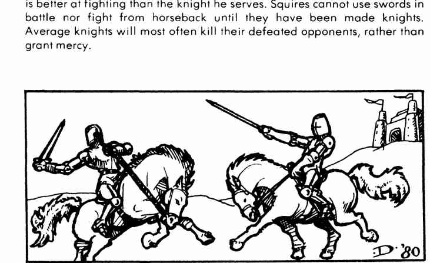

品质骑士 · Knight of Quality
品质骑士的护甲等级为 3 至 −2，生命值随等级变化但不低于 70，战士等级 10–13 级；约 60% 有 1–4 名侍从和 1–10 名武装人员，约 75% 会宽恕在战斗中请求饶命者。原书列出一长串行侠仗义的名字，并以星号标识品质骑士。
恶名昭著的骑士则把骑士精神当作获利手段，会用尽各种肮脏伎俩。名单中包括 Andred、Breunis Sans Pite、Damas、King Mark、Meleagrance、Mordred、Phelot、Pinell 和 Turquine。

上一节：声名卓著的普通骑士 · The Average Knight of Renown
下一节：亚瑟王 · King Arthur